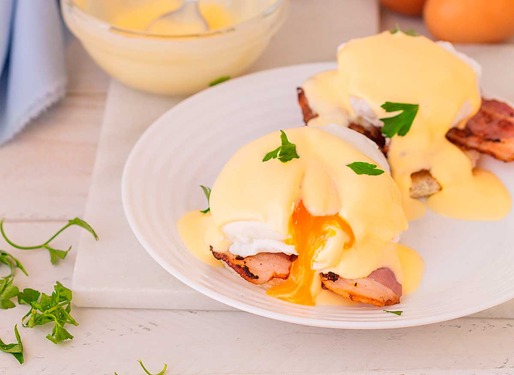
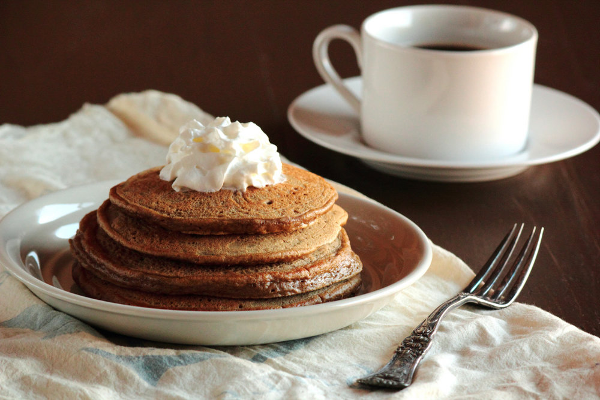

Huevos Benedictinos


Huevos benedictinos: un clásico del brunch Los huevos benedictinos son un plato de desayuno o brunch que combina pan, jamón, huevos pochados y salsa holandesa.
Hotcakes
Café
Con un costo:$150